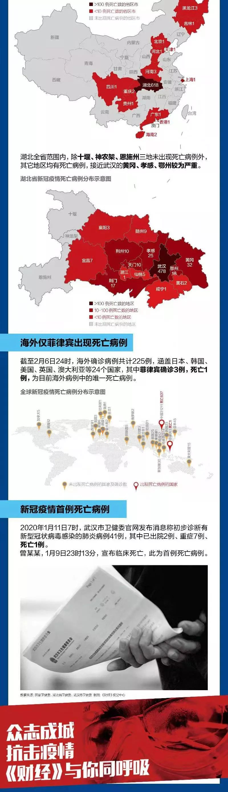
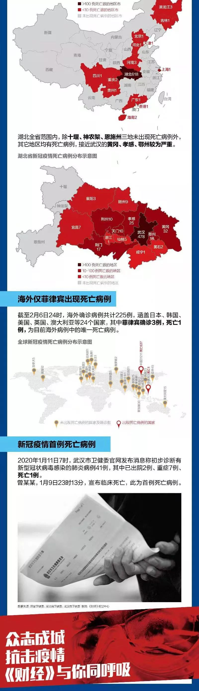

数说疫情0207：疫情增势继续趋缓
原文链接 备份链接 图/法新 文 | 徐进 1、 今日概况： 根据国家卫健委消息，截至2月6日24时，31个省（自治区、直辖市）和新疆生产建设兵团累计报告确诊病例31161例，累计治愈出院1540例，现有确诊病例28985例（其中重症病 …

制图 |《财经》视觉中心
根据国家卫健委消息，截至2月6日24时，31个省（自治区、直辖市）和新疆生产建设兵团累计报告确诊病例31161例，累计治愈出院1540例，现有确诊病例28985例（其中重症病例4821例），累计死亡病例636例，现有疑似病例26359例。累计追踪到密切接触者314028人，尚在医学观察的密切接触者186045人。累计收到港澳台地区通报确诊病例50例，其中香港死亡病例1例。
截至2月6日24时，全国死亡病例涵盖湖北、北京、天津、上海、黑龙江、河北、河南、四川、重庆、贵州、海南等11个省区市和香港特别行政区。其中，湖北死亡病例618例，武汉478例，形势依旧是最严峻的城市。
湖北全省范围内，除十堰、神农架、恩施州三地未出现死亡病例外，其它地区均有死亡病例，接近武汉的黄冈、孝感、鄂州较为严重。
截至2月6日24时，海外确诊病例共计225例，涵盖日本、韩国、美国、英国、澳大利亚等24个国家，其中菲律宾确诊3例，死亡1例，为目前海外病例中的唯一死亡病例。
2020年1月11日7时，武汉市卫健委官网发布消息称初步诊断有新型冠状病毒感染的肺炎病例41例，其中已出院2例、重症7例、死亡1例。曾某某，1月9日23时13分，宣布临床死亡，此为首例死亡病例。
 


▲点击图片查看更多疫情报道
责编 | 黄端 duanhuang@caijing.com.cn
本文为《财经》杂志原创文章，未经授权不得转载或建立镜像。如需转载，请在文末留言申请并获取授权。
原文链接 备份链接 图/法新 文 | 徐进 1、 今日概况： 根据国家卫健委消息，截至2月6日24时，31个省（自治区、直辖市）和新疆生产建设兵团累计报告确诊病例31161例，累计治愈出院1540例，现有确诊病例28985例（其中重症病 …
原文链接 备份链接 图/法新 文 | 徐进 是的！好转迹象就藏在数据更新中。据国家和湖北省卫健委公布的数据，截止到2月5日24时，有关数据分析如下： 1、新增确诊病例数由陡增转为下降 其中湖北新增确诊病例数结束连续一周的“步步高”由升转降 …
原文链接 备份链接 *************▲*************2020年1月31日，温州某商业街，店铺都关闭了。（南方周末记者 王华震/图） 全文共*3424*字，阅读大约需要8分钟。 截至2月4日12点，温州确诊新冠肺炎 …
原文链接 备份链接 【财新网】（记者 田佳玮）当地时间2月1日，菲律宾卫生部宣布，一名新冠病毒肺炎患者在菲律宾救一家医院病逝。 这例死亡病例是一名44岁的中国籍男性，来自武汉，他也是菲律宾境内被确诊的第二例新冠病例。日前，这名男子 …
原文链接 备份链接 【财新网】（记者 丁捷 马丹萌）武汉“封城”多日，全国各省市输入性病例已过潜伏期14天。随着湖北以外各地第一批输入性病例潜伏期即将过去，新冠肺炎防控陆续进入本地散发的“第二阶段”。疫情拐点尚未明确，全国大多数地区严防 …